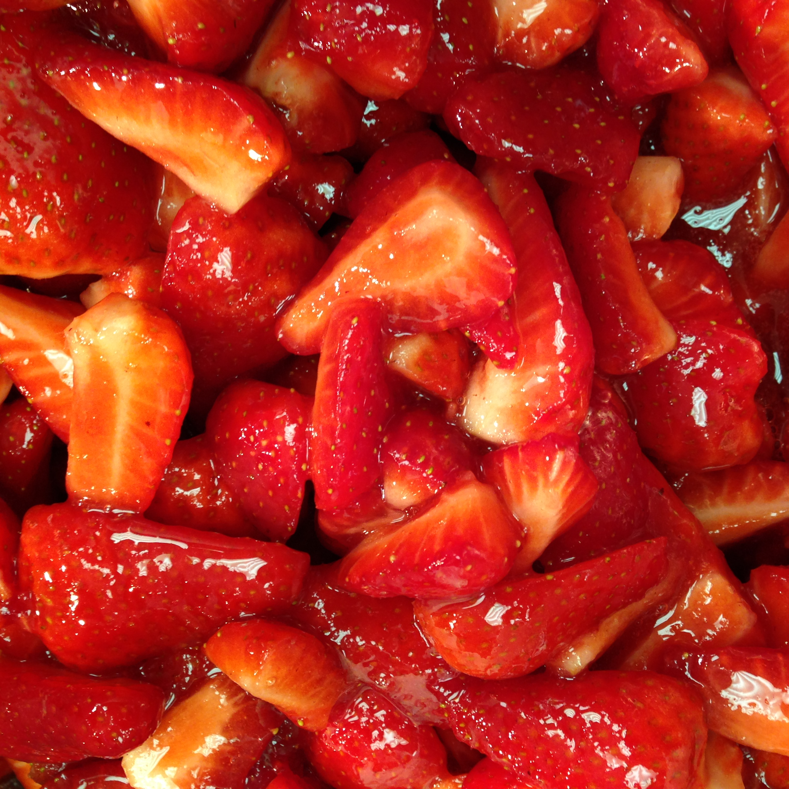

Buttermilk Panna Cotta & Balsamic Strawberries
| Prep Time |
Set time |
Serves |
| 30 mins |
8 hrs |
4 |
Ingredients
- 1.25 cups cream
- 1/2 tin condensed milk
- 3/4 pint butter milk
- 2 sheets gelatine
- Balsamic vinegar
- Sugar
- Strawberries
Instructions
- Place the gelatine in cold water
- Bring cream to the boil &v remove from the heat
- Drain & whisk in the softened gelatine
- Add the buttermilk and condensed milk
- Pour the whole mix through a fine sieve
- Pour into moulds and set for 6-8hrs
- bring the vinegar and sugar up to a boil to disolve
- Cool the vinegar mix
- Chop the Strawberries and toss in teh balsmix syrup
- Serve with crushed Hazelnut praline